Generative modeling
of seed production 🌰
of seed production 🌰
How trees mast-er reproduction?
How to explain seed production dynamics of trees?
How to explain seed production dynamics of trees?
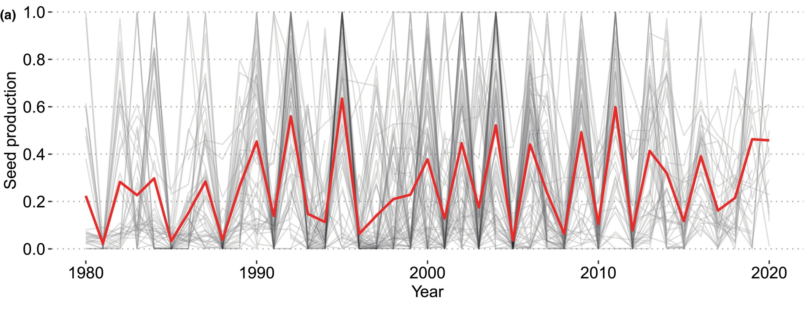
Figures from Szymkowiak et al. 2024
Masting, or mast seeding? Pulses of annual seed production
How to explain seed production dynamics of trees?
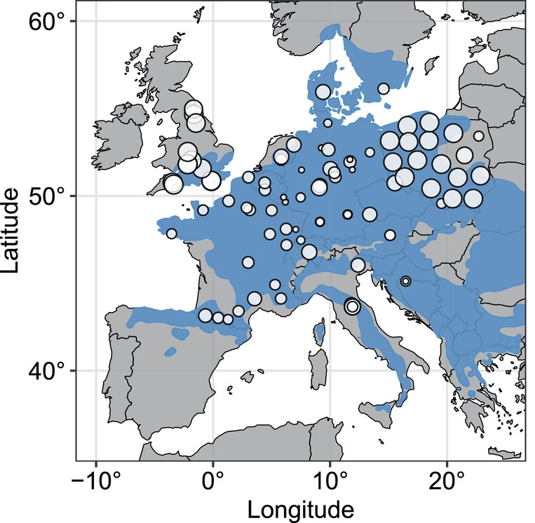
Figures from Szymkowiak et al. 2024
Masting, or mast seeding? Pulses of annual seed production
Supposedly synchronized across some spatial scale (“subcontinental”)
Focus on beech in England!
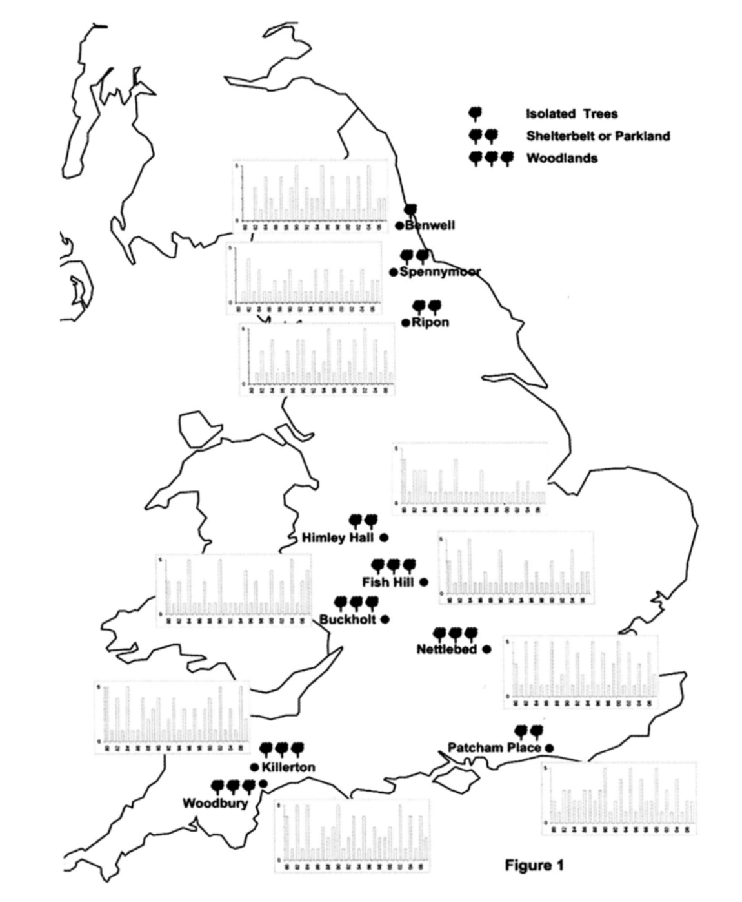
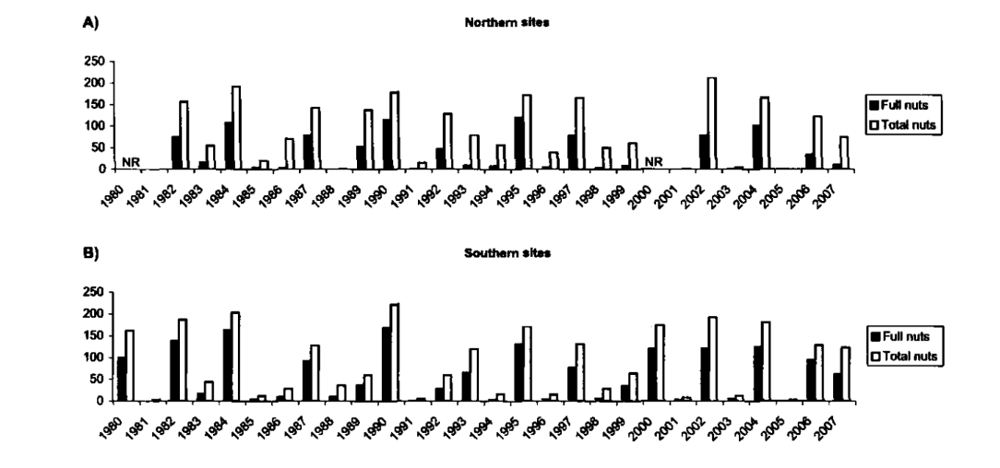 Figures from Packham et al. 2008
“ground search for seven minutes per tree” \(\rightarrow\) seed production at the individual scale?
from 1980 to now
Two probabilistic models?
Non-masting/masting: two different behaviors?
How to mix two (or more) behaviors?
Basic mixture model!
\(N\) observations \(\{y_1, \ldots, y_i, \ldots, y_N \}\)
We introduce \(K\) observational models, with parameters \(\{\theta_1, \ldots, \theta_k, \ldots, \theta_K \}\)
And \(N\) states to quantify which model is responsible for which observations: \(\{z_1, \ldots, z_i, \ldots, z_N \}\)
We don’t know these states, they are latent
And we model the probability of assignment:
\(\forall i \in [\![1,\mathrm{N}]\!] \hspace{1cm} p(z_i = k \mid \lambda_{1}, \ldots, \lambda_{K}) = \lambda_{k}\)
How to mix two (or more) behaviors?
In theory, we want to infer both the observational model parameters and the latent states:
\[\begin{align*} p(z_i, \lambda, \theta \mid y_i ) &\propto p(y_i, z_i, \lambda, \theta ) \\ &\propto p(y_i \mid z_i, \theta ) \, p(z_i \mid \lambda) \, p( \lambda ) \, p(\theta) \\ \end{align*}\]
In practice we marginalize over all the possible assignments for \(z_i\):
\[\begin{align*} p(\lambda, \theta \mid y_i ) &\propto \sum_{k = 1}^{K} \bigg[ p(y_i \mid z_i = k, \theta ) \, p(z_i = k \mid \lambda) \bigg] \, p( \lambda ) \, p(\theta) \\ \end{align*}\]
See Mike Betancourt’s chapter on mixture modeling
Toy example in Stan
With two observationel models:
Toy example in Stan
With two observationel models:
data {
int N;
array[N] real y;
}
parameters {
real parameter1; // parameter for the 1st model
real parameter2; // parameter for the 2nd model
real<lower=0, upper=1> lambda; // probability of getting assigned to model 1
}
model {
for (n in 1:N) {
target += log_mix(lambda,
some_lpdf(y[n] | parameter1),
some_lpdf(y[n] | parameter2));
}
// + some priors
}Going back to seeds!
Non-masting/masting: two different behaviors?


Stepping back: the model
Is this mixture model really generative? Are we happy?
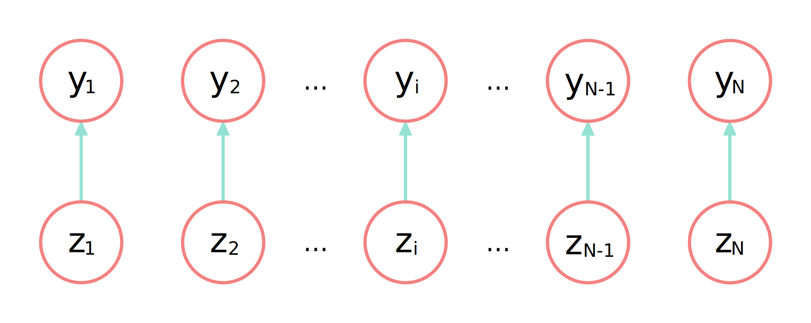
We assume that the states (assignments) are independent…
Stepping back: the model and the biology
- Flower buds for next year initiated at the same time that current year’s fruits are growing
- If a tree is masting: most of the energy devoted to current fruit growth and ripening, not to bud development
- ‘Folk knowledge’—yet never included in models!
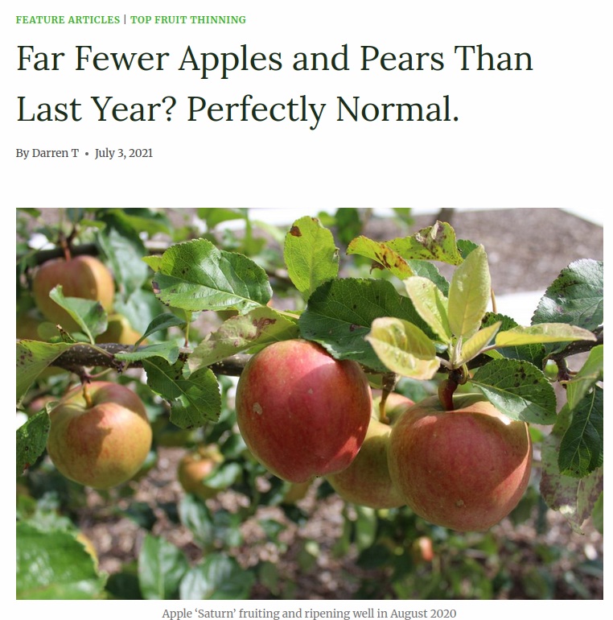
Screenshot from
orchardnotes.com
Stepping back: the model and the biology
Non-masting/masting
Stepping back: the model and the biology
Previous year
\(\rightarrow\)
Non-masting/masting
\(\rightarrow\)
Next year
Stepping back: the model and the biology
Stepping back: the model and the biology
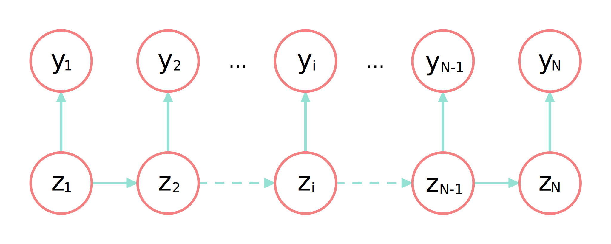
Each latent state should depend on its preceding state!
\[\prod_{i = 1}^{N} p(y_i \mid z_i = k, \theta ) \, p(z_i = k \mid \lambda) \]
See Mike Betancourt’s chapter on HMM
Stepping back: the model and the biology
Each latent state should depend on its preceding state!
\[p(z_{1}) \, p(y_{1} \mid 1, z_{1}, \theta) \prod_{i = 2}^{N} p(y_{i} \mid i, z_{i}, \theta) \, p(z_{i} \mid z_{i - 1}, \lambda)\]
See Mike Betancourt’s chapter on HMM
Stepping back: the model and the biology
Each latent state should depend on its preceding state!
\[\color{#95E1D3}{p(z_{1}) \, p(y_{1} \mid 1, z_{1}, \theta)} \prod_{i = 2}^{I} p(y_{i} \mid i, z_{i}, \theta) \, p(z_{i} \mid \color{#F38181}{z_{i - 1}}, \lambda)\]
\(\rightarrow\) the Markovian assumption!
See Mike Betancourt’s chapter on HMM
Hidden Markov models (HMM) in practice
- initial state probability, \(\color{#95E1D3}{p(z_{1})}\)
- transition probability matrix \[ M = \begin{pmatrix} \tau_{\color{#95E1D3}{\text{non-mast.}} \rightarrow \color{#95E1D3}{\text{non-mast.}}} & \tau_{\color{#95E1D3}{\text{non-mast.}} \rightarrow \color{#F38181}{\text{masting}}} \\ \tau_{\color{#F38181}{\text{masting}} \rightarrow \color{#95E1D3}{\text{non-mast.}}} & \tau_{\color{#F38181}{\text{masting}} \rightarrow \color{#F38181}{\text{masting}}} \end{pmatrix} \]
\[\ldots\]
\[\cdot M \longrightarrow\]
\[\cdot M \longrightarrow\]
\[\cdot M \longrightarrow \ldots\]
Same matrix at each step: homogeneous HMM
See Mike Betancourt’s chapter on HMM
Let me add some climate!
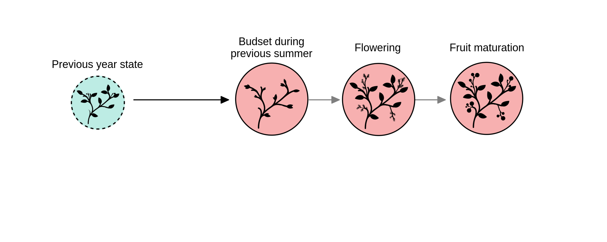
Let me add some climate!
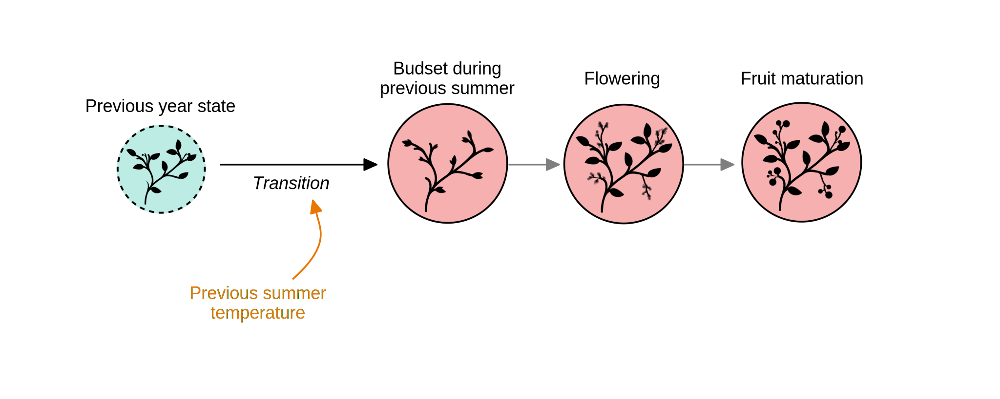
- previous summer influence flowerbud set: heterogeneous HMM
\[ M_i = \begin{pmatrix} 1 - \tau_{\color{#95E1D3}{\text{nm.}} \rightarrow \color{#F38181}{\text{m}}}(\color{#ea7500}{T_i}) & \tau_{\color{#95E1D3}{\text{nm}} \rightarrow \color{#F38181}{\text{m}}}(\color{#ea7500}{T_i}) \\ 1 - \tau_{\color{#F38181}{\text{m}} \rightarrow \color{#F38181}{\text{m}}} & \tau_{\color{#F38181}{\text{m}} \rightarrow \color{#F38181}{\text{m}}} \end{pmatrix} \]
Let me add some climate!
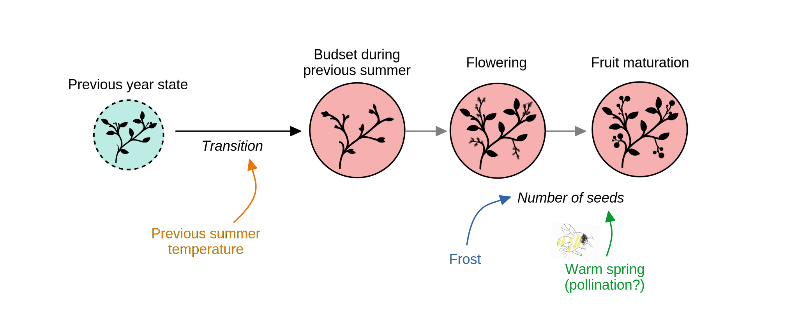
- previous summer influence flowerbud set: heterogeneous HMM
- spring conditions (frost risk, warm spring) influence seed production
Retrodictive check

Retrodictive check

Posterior inference

Posterior inference


Next steps
- best strategy to separate climate effect from intrinsic transition
\(\rightarrow\) is global warming really causing a ‘breakdown’?
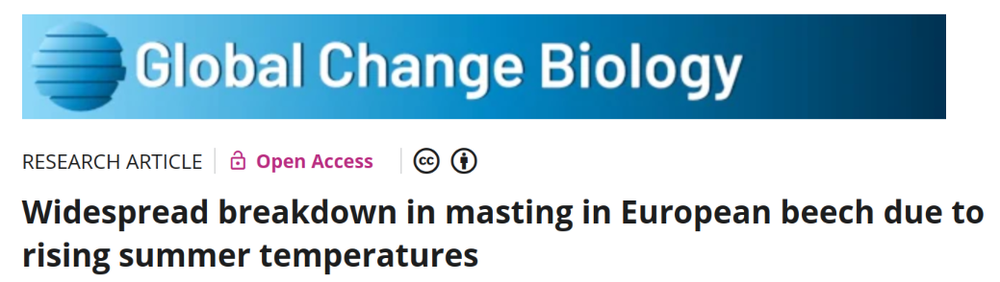
Next steps
- best strategy to make predictions (‘forecast’)

Next steps
- ideas of ecology-relevant visualizations?

Next steps
Am I really happy with the model?
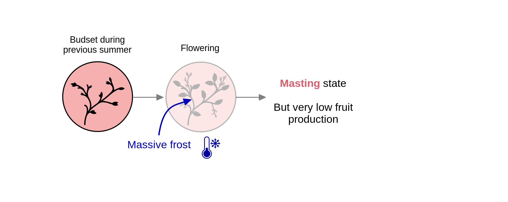
spare energy to initiate flower buds?
thinning out is a common practice to balance fruit production between current and next year… more inspiration from ‘folk knowledge’?
Next steps
best strategy to separate climate effect from intrinsic transition
best strategy to make predictions (‘forecast’)
ideas of ecology-relevant visualizations?
are we happy with how generative is the model?